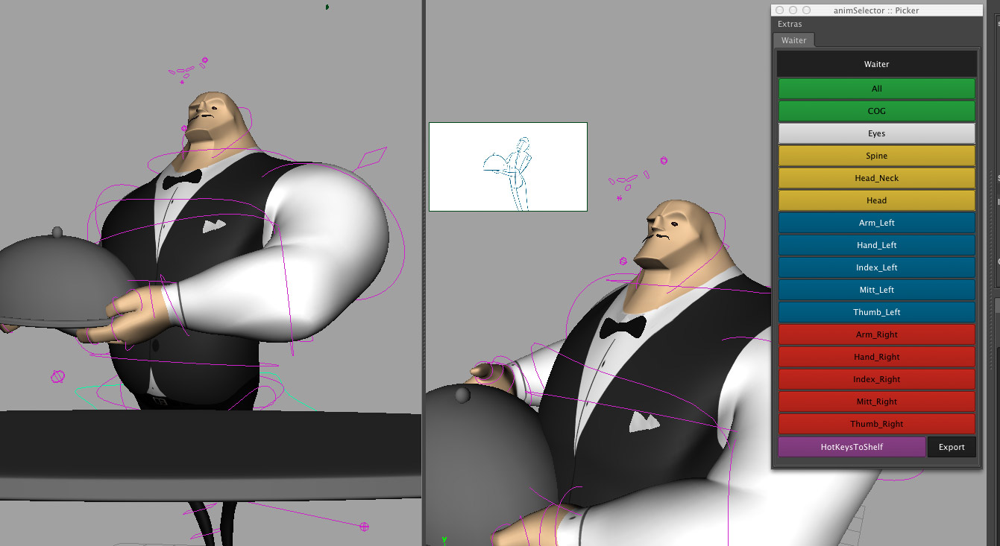
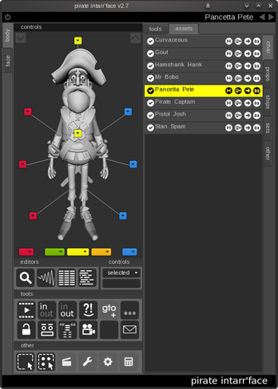
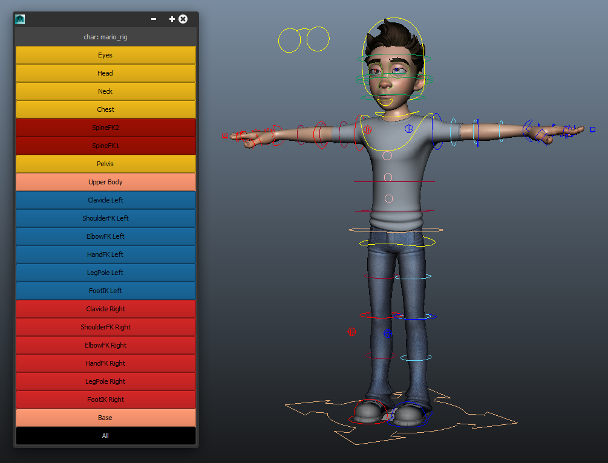
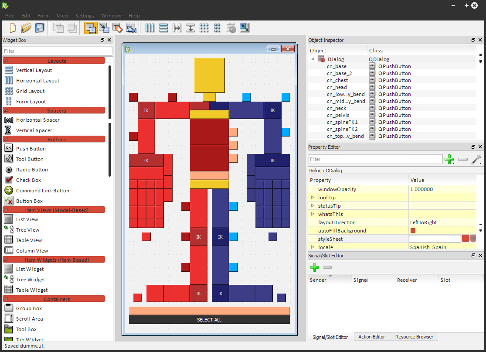

Character Picker
... o cómo hacer un sinóptico corporal en Autodesk Maya.
por Cesar Saez | @csaezmargotta
Hoy hablaremos sobre...
- Sinópticos
- Python
- Maya APIs (cmds, pymel, openmaya)
- Qt (PyQt4, PySide)
- Qt Designer
- QGraphicsScene (canvas)
Sinóptico?
Interfaz gráfica mediante la cual 'no-riggers' interactúan con los rigs en producción, es su centro de operaciones.
La víctima: Mario

Los números de Mario:
- 1950+ nodos.
- 100+ controles anim. cuerpo.
- 45+ controles anim. faciales.
- 790+ atributos animables.
- ...
+control → +gestión
Según la complejidad del rig, llega un punto en que resulta poco eficiente seleccionar los controles de animación desde el visor 3D.
Camera View + Graph Editor + Picker
✌
Referencias...

animSelector, Luca Fiorentini

Unreal Engine 4, Epic Games

The Pirates, Martin Orlowski - Aardman

Frozen, Walt Disney Animation Studios

Frozen, Walt Disney Animation Studios
Interfaz gráfica → Scripting
Maya Embedded Language (MEL) o Python?
Python!
- Lenguaje de uso general.
- Licencia de código abierto.
- Baterías incluídas (std library).
- Sintaxis muy limpia, código legible.
- ...
PEP 20 - The Zen of Python
- Beautiful is better than ugly.
- Explicit is better than implicit.
- Simple is better than complex.
- Complex is better than complicated.
- Readability counts.
- ...
Qt Bindings
- PyQt - GNU General Public License v3, commercial
- PySide - LGPL version 2.1 (incluído en Maya >= 2014)
Volveré sobre esto más adelante...
Python en Maya
- cmds: acceso a comandos MEL en python.
- openmaya: acceso a la API de maya (bajo nivel).
- pymel: implementación 'idiomática' de python en Maya.
Python (cmds) → Maya → Qt

picker_v1.py
from maya import cmds # importamos los comandos de maya
w = cmds.window(title="Picker", width=300) # nueva ventana
cmds.columnLayout(adjustableColumn=True) # layout vertical
cmds.text(label="char: mario_rig", height=30) # etiqueta
# botones
cmds.button(label="Head", height=30, backgroundColor=(0.9, 0.7, 0.1),
command=lambda _: cmds.select("mario_rig:mario_ac_cn_head"))
...
cmds.showWindow(w) # abrimos la ventana
Datos ↔ Lógica
Estructura de datos
### Version 0.1:
{
"filetype": "picker_data",
"version": 0.1,
"charname": "",
"color_table": {key: value, ...},
"anim_table": {key: value, ...},
"selectors": ({"name": "",
"targets": (anim_table key, ...),
"color": color_table key,
}, ...),
}
* filetype: `str` que determina el tipo de información
* version: `float` que determina la versión
* charname: `str` que representa el nombre del personaje (namespace)
* color_table: `dict` con tabla de colores
* key: `str` alias del color
* value: `tuple` componentes RGB normalizados (de 0.0 a 1.0)
* anim_table: `dict` aliases controles de anim.
* key: `str` alias
* value: `str` con el nombre del nodo correspondiente
* selectors: `list` / `tuple` de selectores
* item: `dict` que representa la informacion de un botón selector
* name: `str` que representa el nombre del botón
* targets: `list`/`tuple` de aliases a seleccionar (anim_table)
* color: `str` con el 'alias' correspondiente en color_table
Datos (json)
import json
file_path = "path/to/file.json"
# Importar desde json
with open(file_path) as fp:
data = json.load(fp)
# Exportar a json
with open(file_path, "w") as fp: # abrimos en modo escritura!
json.dump(fp, data)
picker_v2.py
import json
from maya import cmds
def open_picker(data, w=300, h=30):
if not all((data.get("filetype") == "picker_data",
data.get("version") >= 0.1)):
return False # datos inválidos, abortar
w = cmds.window(title="Picker", width=w) # nueva ventana
cmds.columnLayout(adjustableColumn=True) # layout vertical
cmds.text(label="char: " + data["charname"], height=h) # nombre del personaje
for btn in data.get("selectors"): # botones
targets = [data["anim_table"].get(x) for x in btn["targets"]] # targets
cmds.button(label=btn["name"], height=h,
backgroundColor=data["color_table"].get(btn["color"]),
command=lambda _, t=targets: cmds.select(t)) # creamos boton
cmds.showWindow(w) # abrimos la ventana
json_file = r"W:\dev\slides_picker\code\picker_cmds\data.json"
with open(json_file) as fp:
d = json.load(fp) # importamos datos
open_picker(d)
Limitaciones:
- Diseño de la GUI mediante código.
- Opciones de posicionamiento (layout) limitado.
- Conjunto de elementos (widgets) limitados.
- No es posible usar imágenes/iconos.
- Dificultad con interfaces dinámicas.
Alternativas?
Qt, code less...
Qt es una librería multiplataforma para desarrollar interfaces gráficas en C++, Maya utiliza internamente Qt para dibujar su GUI.
Python (*PySide) → Qt ← Maya
*Asumiremos PySide como Qt binding de aquí en más...
Qt Designer
.../autodesk/mayaXXXX/bin/designer

1. xxx.ui → xxx.py
# file: pyside-uic.py
import sys
from pysideuic import compileUi
def convert(ui_file):
output_file = ".".join(ui_file.split(".")[:-1]) + ".py"
with open(output_file, "w") as fp:
compileUi(ui_file, fp, False, 4, False)
if __name__ == "__main__" and len(sys.argv) == 2:
convert(sys.argv[1])
2. Maya MainWindow
# file: qt_utils.py
from PySide.QtGui import QMainWindow # qt widget
from shiboken import wrapInstance # parte de lib PySide
from maya.OpenMayaUI import MQtUtil # utilidades Qt maya
def get_anchor():
ptr = MQtUtil.mainWindow() # puntero a la ventana de maya (c++)
return wrapInstance(long(ptr), QMainWindow) # instancia QMainWindow desde ptr
1 + 2 ↴
from qt_utils import get_anchor # maya mainwindow
from picker import Dialog_Ui # ui convertido
class Picker(DialogUi): # heredamos del ui convertido
def __init__(self, parent, data):
super(Picker, self).__init__(parent)
self.data = data
self.connect_buttons() # conectamos botones
def connect_buttons(self):
for w in self.children():
if not w.objectName().startswith("ui_"):
continue
target_names = self.data.get(w.objectName())
w.connect.clicked(lambda t=target_names: cmds.select(t))
app = Picker(parent=get_anchor())
app.show()
Limitaciones:
- Diseño estático.
- Sólo botones rectangulares.
Alternativas?
QGraphicsScene (a.k.a. canvas)
...
Conclusiones
+control → +gestión
Complejidad del rig "obliga" a ofrecer alternativas al viewport.
Funciones nativas
Sinópticos plantean retos a las funciones nativas de Maya, tanto para MEL cono Python.
Qt
Podemos "saltarnos" las limitaciones de Maya mediante Qt en python.
Maya < Qt (designer) < Qt (canvas)
Nada es gratis, +versatilidad → +trabajo.